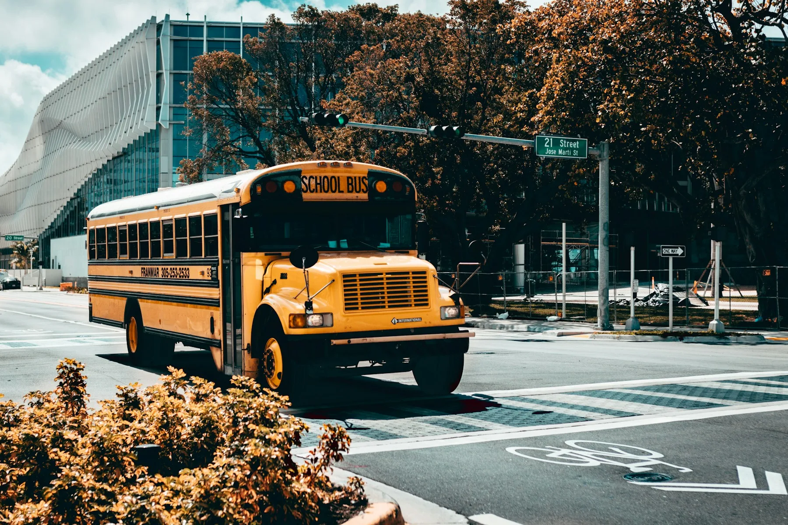
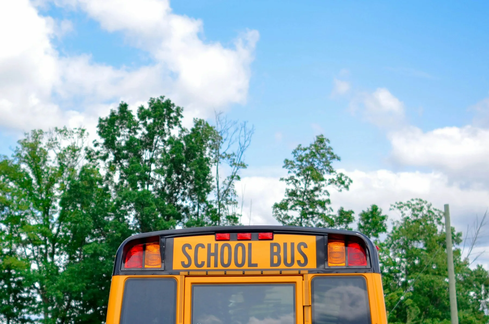
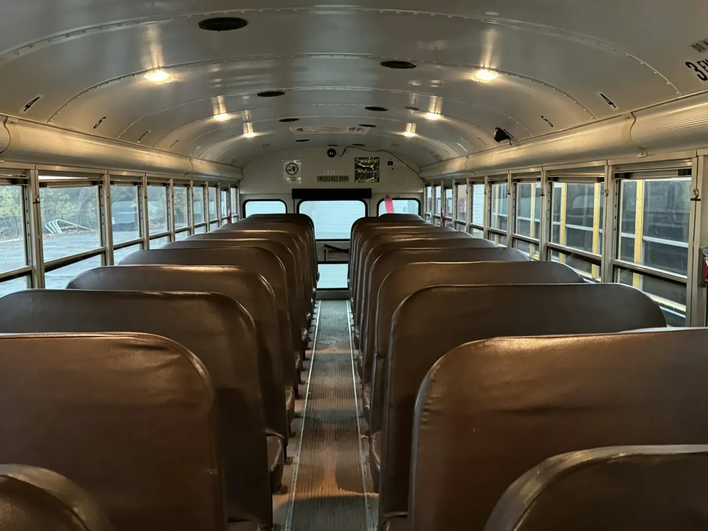

01 / EVERY SCHOOL DAY
Home-to-school transport
Morning pickup and afternoon return with an assigned stop, school and collection routine.
Daily pickup details →Daily school runs, after-school activities and educational trips. Start with the journey you need, then check coverage, safety and the plan that fits.

Each service has its own timetable and booking requirements. Availability is confirmed by the operator.
Service types, stops, school areas and route confirmation.
Driver checks, vehicle readiness and onboard safeguards.
Enrollment, route assignment, digital passes and journey notices.
Coverage options, sibling savings, payment and bus rules.
Journey examples and the records behind a dependable service.

Find the area, destination school and journey direction.
Share the student, guardian and collection details.
The operator approves the stop, seat, start date and plan.
Share the school, area and journey you have in mind.